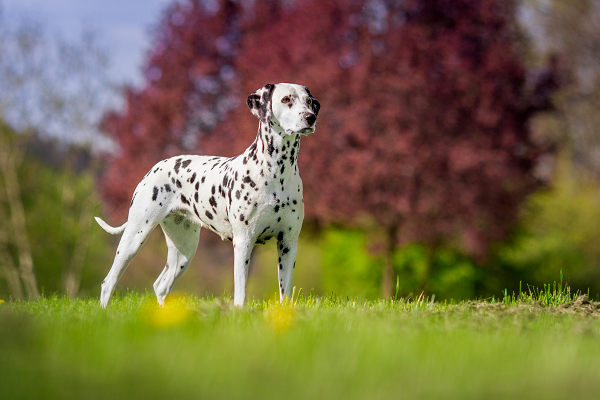

Mais do que charme, os Dálmatas são fiéis e cheios de energia. O cachorro Dálmata é um dos mais famosos do mundo! E não falamos isso pelo clássico filme que destaca todo o charme das suas manchinhas, mas pelo seu jeito dócil, sensível e amigável! Muito esperto, ele adora praticar exercícios físicos, principalmente ao lado do seu tutor. Durante muito tempo a raça Dálmata foi utilizada na condução de carruagens, devido ao seu porte musculoso e robusto. Mesmo sendo muito amigável, ele será um ótimo guardião e latirá bastante até avisar sua família de que algo diferente está acontecendo, afinal, ele sempre fará o possível para ver todos ao seu redor muito felizes.
Se existe algo que os cães Dálmatas têm de sobra, é energia! Eles são ótimos corredores e sempre estão dispostos a correr e brincar. As caminhadas diárias com esse cãozinho são mais do que necessárias, além da prática de exercícios dentro de casa. Quem tem um cãozinho desses deve saber que ele também adora brincar. Por esse motivo, os mais diversos brinquedinhos não poderão faltar no lar do pet. Além disso, não estranhe se ele aprender diversos truques para chamar a sua atenção, afinal, ele adora aparecer e mostrar o charme único que possui!
Um cachorro Dálmata sadio sempre estará disposto a fazer novos amigos, porém, é necessário ter um pouquinho mais de paciência com alguns exemplares da raça. Como dissemos, alguns pets podem sofrer com deficiência auditiva e, por isso, deve-se tomar mais cuidado na hora de socializa-los. Vale lembrar que o Dálmata é um cãozinho bem espaçoso e pode ser também um pouquinho desastrado. Por isso, não é recomendado deixá-lo sozinho com as crianças por muito tempo.!
Fizemos um gráfico nivelando de 0 a 5 as características da raça, veja a baixo!
O porte é uma das características mais marcantes deste pet. Seja um Dálmata adulto ou filhote, ele sempre terá um ar mais robusto, os músculos mais fortes e bem torneados. E claro, não podemos deixar de falar das famosas manchinhas pelo corpo. Segundo a CBCK (Confederação Brasileira de Cinofilia), a coloração da pelagem de um Dálmata é sempre padrão. Com a predominância do branco, suas manchinhas podem ser pretas ou marrons, variando entre 2 e 3 centímetros.
Como todo cãozinho, o Dálmata precisa dos cuidados básicos com higiene. Os banhos não precisam acontecer com tanta frequência, mas mesmo assim óleos devem ser utilizados para manter a qualidade e o brilho dos pelos. Além disso, as escovações dos dentinhos também são fundamentais para os cuidados com a higiene bucal. Elas evitarão complicações como cáries, tártaros, placas bacterianas e mau hálito. Além dos probleminhas com surdez, outros probleminhas são bem comuns nos Dálmatas e, por isso, demandam uma quantidade maior de cuidados. Um deles é relacionado ao sistema urinário do pet, devido ao excesso de ácido úrico em seu metabolismo. Analisar se ele está fazendo xixi regularmente e com a coloração adequada é fundamental. Caso seja notada alguma alteração, um veterinário deve ser contatado imediatamente. Na pele do seu amiguinho também podem surgir feridinhas e machucados com mais frequência, devido à sensibilidade maior que ela possui. Uma boa alimentação também ajudará a manter a pele mais forte, protegida e resistente!
Com os pequenos, o cuidado deve ser ainda maior, a começar pela alimentação. Após os primeiros 30 dias de vida, uma ração para Dálmata filhote deve ser oferecida, em quantidades moderadas, para garantir um bom crescimento e o desenvolvimento da inteligência. E claro, não podemos esquecer da vermifugação — procedimento essencial na infância e ao longo da vida do pet! Oferecer um medicamento para verme ao seu cãozinho o manterá protegido contra a infestação desses parasitas e garantirá uma vida muito melhor.